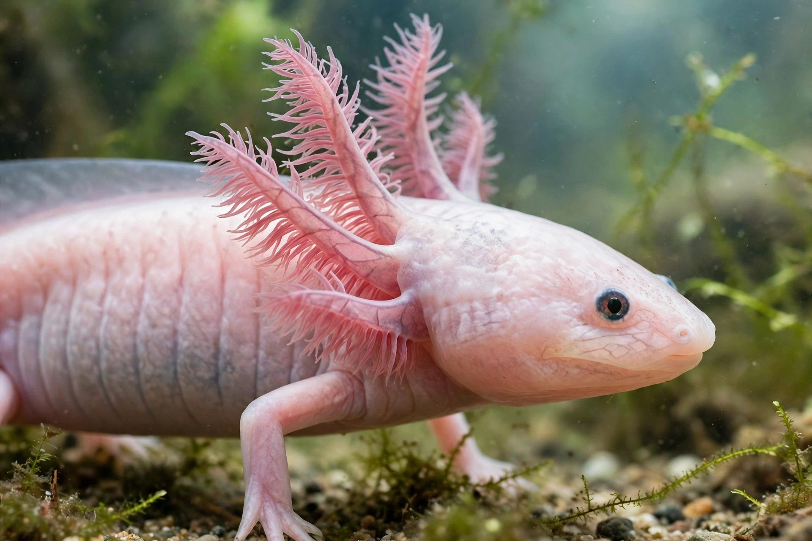

In biology, regeneration is the process of renewal, restoration and tissue growth that makes genomes, cells, organisms and ecosystems resilient to natural fluctuations or events that cause disturbance or damage. Every species is capable of regeneration, from bacteria to humans; at its most elementary level it is mediated by the molecular processes of gene regulation and involves cell growth, differentiation and morphogenesis.
Regeneration in animals is achieved principally by somatic stem cells or by dedifferentiation of mature cells. Two broad strategies are recognised: epimorphosis, in which proliferation of cells (often in a mound called a blastema) rebuilds the missing structure — as in salamander limb regeneration — and morphallaxis, in which existing tissues are remodelled with little new growth, as in the hydra. Planarian flatworms, which use pluripotent stem cells called neoblasts, can regenerate a complete animal from a tiny body fragment.
Hydra and planarians show whole-body regeneration; starfish regrow arms (and sometimes a whole body from one arm); zebrafish regenerate fins, heart muscle and parts of the retina and spinal cord; axolotls and other salamanders regenerate limbs, tails, jaw and parts of the heart and brain. Mammalian capacities are much more limited — prominent examples are liver regeneration, regrowth of deer antlers, and fingertip regeneration in young children — and understanding why mammals scar instead is a central aim of regenerative medicine.